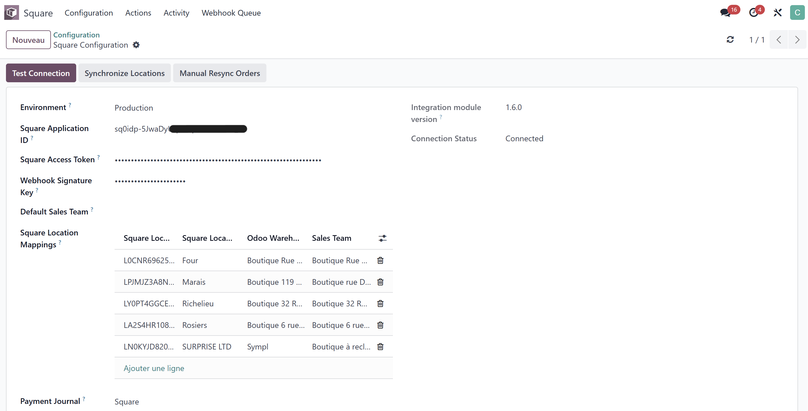
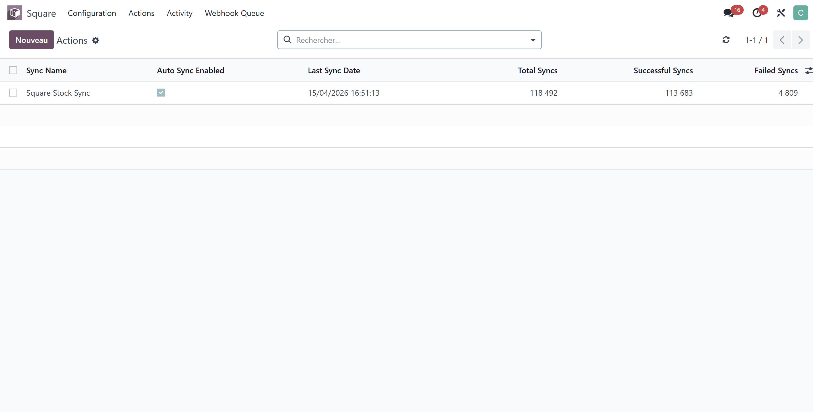
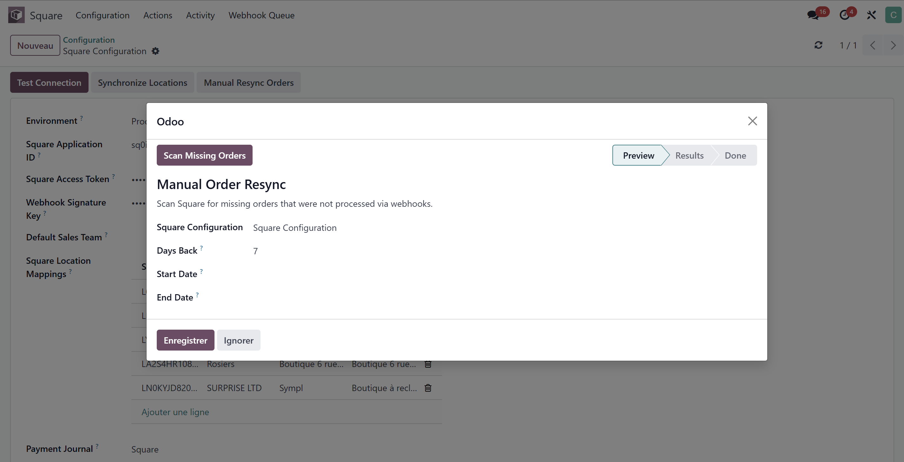

ODOO 19.0 · SQUARE POS
Square POS Integration
Connect Square POS to Sales, Accounting, and Inventory in Odoo 19 Community.
Developed by Davai. Independent integration, not an official Square or Odoo product.
ODOO 19.0 · SQUARE POS
Developed by Davai. Independent integration, not an official Square or Odoo product.
Square POS Integration is the same application, odoo_square,
with a separate release for each Odoo version. Use the Versions selector
on this page to download the release that matches your Odoo server.
Read the requirements and setup instructions on the selected version's page before installing. Moving an existing Odoo database to another major version requires a separate database migration.
Checkout, payment collection, and refund initiation happen in Square. For a completed sale, the addon creates or updates the Odoo sales order, posts the invoice, records the Square payment in the selected journal, and deducts tracked stock from the mapped warehouse.
The addon looks for an Odoo contact by email, then phone, then name. It can create a contact from Square customer details when no match is found.
Completed full and partial EUR refunds produce credit notes and refund payment records. Returned goods go back into stock when applicable. Supported exchanges record the returned and replacement items and settle the invoice and credit note, including any price difference.
Square sales and applicable returns update stock in the mapped Odoo warehouse. Supported Odoo stock movements, such as validated receipts, and applied inventory adjustments send the warehouse's on-hand count for matching SKUs to the mapped Square location.
Review webhook processing, order and refund activity, and stock sync results in the Integration Logs. Related sales orders can also show updates in their chatter.
19.0 branch and place the addon on your Odoo addons path.https://your-odoo-domain.example/square/webhook and subscribe to the events listed below. Save the subscription's signing key in Webhook Signature Key.Interface examples from an earlier release.
Configure API credentials, the signing key, and Square location mappings.

Inspect queued Square events and their processing status.

Review processing results and errors.

Review sync statistics and send eligible Odoo stock counts to Square.

Scan a date range and choose missing Square orders to import.

base, web, sale, sales_team, account, stock, sale_stock, and paymentrequests installed in the Odoo environmentorder.created to import a Square orderorder.updated to apply supported changes, including completion and cancellationpayment.updated to process completed payments for supported exchangesrefund.created to register a Square refundrefund.updated to apply status changes and finalize accounting and applicable stock returnsThe addon uses the selected Square environment to fetch order and customer details and send inventory counts. With the webhook signature key configured, the addon verifies incoming requests with HMAC-SHA256.
Released under the GNU Affero General Public License v3.0 or later (AGPL-3). The source code is available on GitHub.
Send questions, bug reports, and feature requests to support@davai.co.